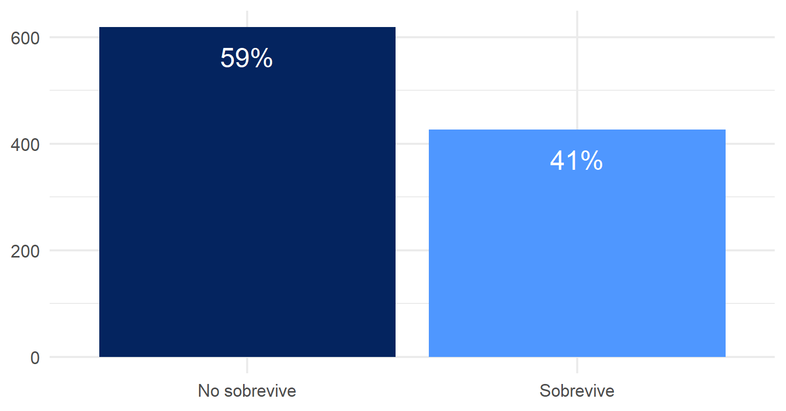
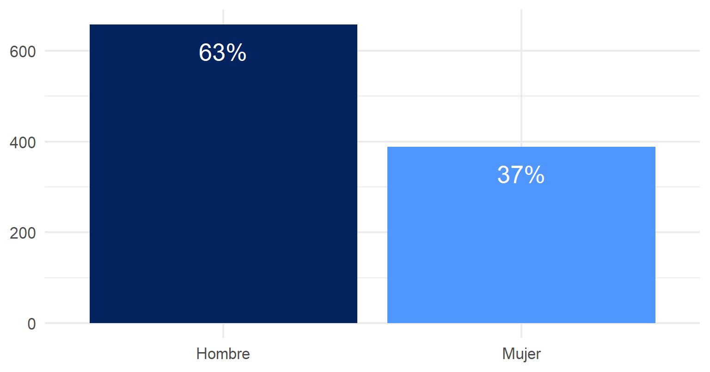
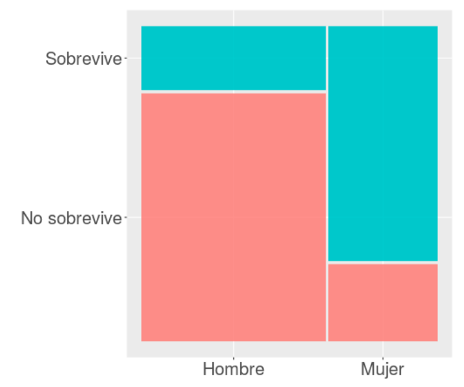
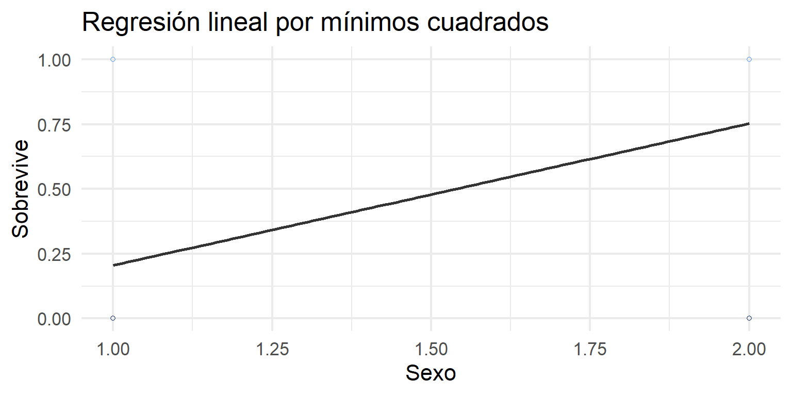
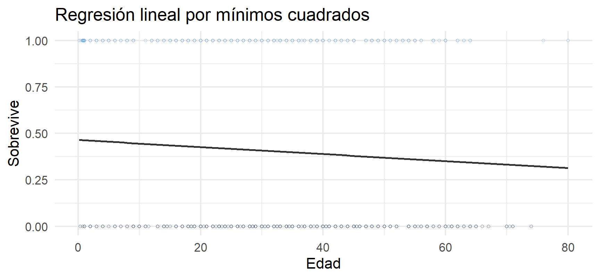
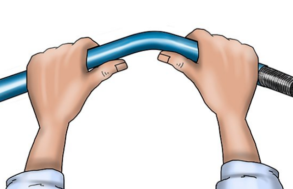
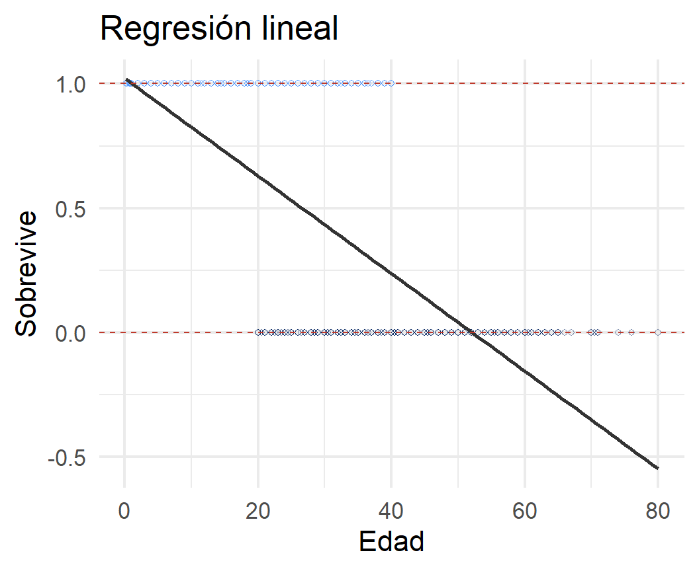
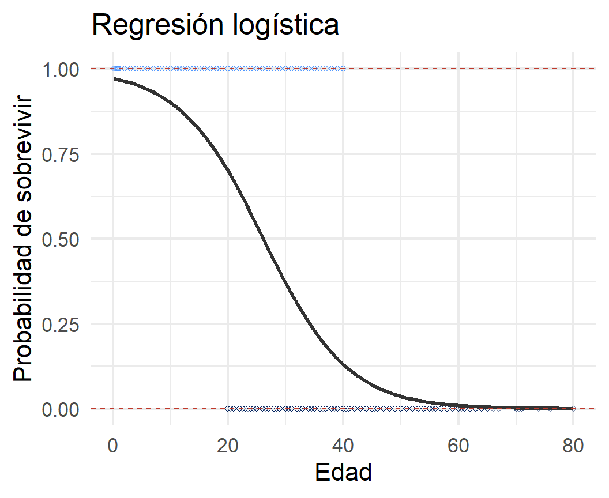

| Hombre | Mujer | |
|---|---|---|
| No sobrevive | 0.79 | 0.25 |
| Sobrevive | 0.21 | 0.75 |

Métodos estadísticos para
Ciencias Sociales III
Kevin Carrasco
Sociología - UNAB
2do Sem 2026
https://metod3-unab.netlify.app/
Sesión 8
Introducción a la regresión logística
¿Dónde quedamos?
La sesión pasada incorporamos variables categóricas al modelo de regresión
Vimos que sus números son etiquetas, que se codifican como dummy, y que su coeficiente es una diferencia de promedios respecto de una categoría de referencia
Pero esas variables categóricas estaban siempre del lado independiente de la ecuación
Regresión logística (1)
Para variables dependientes dicotómicas
Hoy
¿Por qué el modelo de regresión que conocemos no sirve cuando la dependiente es dicotómica?
¿Qué alternativa existe?
Probabilidades, odds y odds ratio: las piezas que trabajamos esta mañana en el taller
Tipos de variables
Variables
Discretas (rango finito de valores):
- Dicotómicas
- Politómicas
Continuas:
- Rango (teóricamente) infinito de valores
Niveles de medición de variables
- NOIR: Nominal, Ordinal, Intervalar, Razón
| Tipo | Características | Propiedad de números | Ejemplo |
|---|---|---|---|
| Nominal | Uso de números en lugar de palabras | Identidad | Nacionalidad |
| Ordinal | Números se usan para ordenar series | + ranking | Nivel educacional |
| Intervalar | Intervalos iguales entre números | + igualdad | Temperatura |
| Razón | Cero real | + aditividad | Distancia |
Tipos de datos en relación a escalas de medición
Datos categóricos: pueden ser medidos solo mediante escalas nominales, u ordinales en caso de orden de rango
Datos continuos:
- Medidos en escalas intervalares o de razón
- Pueden ser transformados a datos categóricos
Descriptivos según tipo de variable
| Categórica | Continua | Categ.(y)/Categ.(x) | Cont.(y)/Categ.(x) | |
|---|---|---|---|---|
| Ejemplo | Estatus ocupacional | Ingreso | Estatus ocupacional (Y) / Sexo (X) | Ingreso (Y) / Sexo (X) |
| Tabla | Frecuencias / porcentajes | \(\bar{X}\) / sd | Tabla de contingencia | Clasificar Y |
| Gráfico | Barras | Histograma / boxplot | Barras condicionado | Histograma o boxplot condicionado |
Análisis estadístico según tipos de variables
Variable dependiente (y): lo que quiero explicar
Variable independiente (x): lo que me permite explicar la dependiente
| Variable independiente (x) | Variable dependiente categórica | Variable dependiente continua |
|---|---|---|
| Categórica | Tabla de contingencia, Chi2 | ANOVA, prueba t |
| Continua | Regresión logística | Correlación / regresión lineal |
Todo el curso ha transcurrido en la columna derecha. Hoy nos movemos a la izquierda
El caso del Titanic
¿Se puede anticipar el final?
Titanic data
| No | Variable | Stats / Values | Freqs (% of Valid) | Graph | Missing | ||||||||||
|---|---|---|---|---|---|---|---|---|---|---|---|---|---|---|---|
| 1 | survived [factor] |
|
|
 |
0 (0.0%) | ||||||||||
| 2 | sex [factor] |
|
|
 |
0 (0.0%) | ||||||||||
| 3 | age [numeric] |
|
98 distinct values |  |
0 (0.0%) |
Generated by summarytools 1.0.1 (R version 4.3.2)
2026-10-19
Sobrevivientes

Figure 1
Sexo

Figure 2
Sobrevivencia / sexo

El 75% de las mujeres sobrevive, mientras el 25% no sobrevive
¿En qué medida la probabilidad de sobrevivir depende del sexo?
¿Es esta probabilidad estadísticamente significativa?
Alternativas
Tabla de contingencia, \(\chi^2\):
- análisis de tendencia general, significación estadística
- pero es poco parsimoniosa, y no hay control estadístico
¿Aprovechar las ventajas del modelo de regresión?
- expresar la relación en un número (\(\beta\))
- inferencia
- control estadístico
El modelo de probabilidad lineal
Modelando la probabilidad de sobrevivir con OLS
Modelo de probabilidad lineal
Se da este nombre a los modelos de regresión donde una variable dependiente dicotómica se estima de manera tradicional, es decir, por mínimos cuadrados ordinarios
| Modelo 1 | ||
|---|---|---|
| Predictores | β | std. Error |
| (Intercepto) | 0.205 *** | 0.016 |
| Sexo (Mujer) | 0.547 *** | 0.027 |
| Observations | 1046 | |
| R2 / R2 adjusted | 0.289 / 0.289 | |
| * p<0.05 ** p<0.01 *** p<0.001 | ||
Significado de los coeficientes
Promedio de supervivencia por sexo
| Sexo | Promedio | N |
|---|---|---|
| Hombre | 0.205 | 658 |
| Mujer | 0.753 | 388 |
El valor del intercepto, 0.205, es el valor predicho para la categoría de referencia, “hombre”
El \(\beta\) de sexo (mujer), 0.547, sumado al intercepto, equivale a la proporción de supervivencia de las mujeres
Funciona …
PERO
Limitaciones del modelo lineal para dependientes dicotómicas

Figure 3
Problemas …

Figure 4
Problemas …
Predicciones imposibles
Problemas de la regresión tradicional (OLS) para dependientes dicotómicas
Eventuales predicciones fuera del rango de probabilidades posibles
Ajuste a los datos y residuos: ¿es la mejor aproximación una recta?
La solución
La regresión logística ofrece una solución a los problemas del rango de predicciones y de ajuste a los datos del modelo de probabilidad lineal
Se logra mediante una transformación de los coeficientes a LOGIT

OLS vs Logit


¿Qué es el logit?
Es el logaritmo de los odds
… ¿y qué son los odds?
Una razón de probabilidades
Para llegar hasta la regresión logística hay que pasar por los odds (chances) y los odds ratio (razón de chances)
Odds y odds ratio
Odds
- Odds (chances): probabilidad de que algo ocurra dividido por la probabilidad de que no ocurra
\[Odds=\frac{p}{1-p}\]
Ejemplo del Titanic: 427 sobrevivientes (41%) y 619 muertos (59%)
\[Odds_{sobrevivir}=427/619=0.41/0.59=0.69\]
Es decir, las chances de sobrevivir son de 0.69
Odds
Odds de 1 significan chances iguales, menores a 1 son negativas y mayores a 1 son positivas
Propiedad simétrica:
- un \(Odds=4\) es una asociación positiva proporcional a la asociación negativa \(Odds=1/4=0.25\)
Odds de sobrevivencia para los hombres
| Hombre | Mujer | |
|---|---|---|
| No sobrevive | 523 | 96 |
| Sobrevive | 135 | 292 |
| Hombre | Mujer | |
|---|---|---|
| No sobrevive | 0.79 | 0.25 |
| Sobrevive | 0.21 | 0.75 |
El 21% de los hombres sobrevive mientras el 79% no sobrevive
\[Odds_{hombres}=\frac{0.21}{0.79}=0.26\]
La probabilidad de sobrevivencia en los hombres es 0.26 veces la de no sobrevivencia
… o en otros términos
Hay 0.26 hombres que sobreviven por cada uno que no sobrevive
Hay 26 hombres que sobreviven por cada 100 hombres que no sobreviven
Odds de sobrevivencia para las mujeres
| Hombre | Mujer | |
|---|---|---|
| No sobrevive | 0.79 | 0.25 |
| Sobrevive | 0.21 | 0.75 |
El 75% de las mujeres sobrevive, mientras el 25% no sobrevive
\[Odds_{mujeres}=\frac{0.75}{0.25}=3\]
La probabilidad de sobrevivencia en las mujeres es 3 veces la de no sobrevivencia
Hay 3 mujeres que sobreviven por cada mujer que no sobrevive
o en otros términos
Hay 300 mujeres que sobreviven al Titanic por cada 100 mujeres que no sobreviven
Odds ratio (OR)
Los odds ratio, o razón de chances, permiten reflejar la asociación entre las chances de dos variables dicotómicas
¿Tienen las mujeres más chances de sobrevivir que los hombres?
| survived | sex | Total | |
|---|---|---|---|
| Hombre | Mujer | ||
| No sobrevive | 523 79.5 % |
96 24.7 % |
619 59.2 % |
| Sobrevive | 135 20.5 % |
292 75.3 % |
427 40.8 % |
| Total | 658 100 % |
388 100 % |
1046 100 % |
Odds ratio
¿Cuántas más chances de sobrevivir tienen las mujeres respecto de los hombres?
- Odds supervivencia mujeres / odds supervivencia hombres
\[OR=\frac{p_{m}/(1-p_{m})}{p_{h}/(1-p_{h})}=\frac{0.753/(1-0.753)}{0.205/(1-0.205)}=\frac{3.042}{0.258}=11.78\]
Las chances de sobrevivir de las mujeres son 11.78 veces más que las de los hombres
El odds ratio nos permite expresar en un número la relación entre dos variables categóricas
Por lo tanto, es una versión del \(\beta\) para dependientes categóricas
Pero … el OR tiene algunas limitaciones que requieren una transformación adicional
Tema de la próxima clase
Un segundo ejemplo
Del Titanic a la sociología
El Titanic es un ejemplo claro, pero poco habitual: la asociación es enorme porque la evacuación siguió una regla explícita de prioridad
Veamos ahora un caso más propio de la investigación social, donde las asociaciones son más modestas
La pregunta: ¿quiénes votan?
La participación electoral
Una de las preguntas clásicas de la sociología política
La literatura sobre abstención señala que la participación no se distribuye al azar: se concentra en ciertos grupos sociales
Nuestra variable dependiente es perfectamente dicotómica: se vota o no se vota
Los datos
La misma base del curso: ELSOC 2016, primera ola
La variable
c11registra la participación electoral retrospectiva: si la persona votó en la última elección presidencialExcluimos a quienes declaran no haber tenido edad para votar, y trabajamos con 2894 casos
Variables independientes: sexo, edad y nivel educacional
La variable dependiente
| Participación | N | % |
|---|---|---|
| No votó | 920 | 31.8 |
| Votó | 1974 | 68.2 |
\[Odds_{votar}=\frac{1974}{920}=2.15\]
Hay 2.15 personas que votan por cada una que no vota
Participación según sexo
| Hombre | Mujer | |
|---|---|---|
| No votó | 0.347 | 0.299 |
| Votó | 0.653 | 0.701 |
\[Odds_{hombres}=1.883\]
\[Odds_{mujeres}=2.348\]
\[OR=1.247\]
Las chances de votar de las mujeres son 1.25 veces las de los hombres. Es una asociación débil
Recordemos: un OR de 1 significa ausencia de asociación
Aquí obtuvimos 1.25, y en el Titanic 11.78
Participación según edad
| Tramo de edad | No votó | Votó | % votó | Odds | OR |
|---|---|---|---|---|---|
| 18-29 | 284 | 204 | 41.8 | 0.718 | 1.00 |
| 30-39 | 258 | 303 | 54.0 | 1.174 | 1.64 |
| 40-49 | 182 | 406 | 69.0 | 2.231 | 3.11 |
| 50-59 | 104 | 518 | 83.3 | 4.981 | 6.94 |
| 60+ | 92 | 543 | 85.5 | 5.902 | 8.22 |
Los odds ratio están calculados respecto del grupo de 18 a 29 años
El gradiente etario
Entre los más jóvenes, el odds es menor que 1: hay más chances de no votar que de votar
A partir de los 30 años el odds supera 1 y sigue aumentando de forma sostenida
Las chances de votar de las personas de 60 años o más son 8.22 veces las del grupo más joven
Aquí sí hay una asociación fuerte, y remite a un fenómeno conocido en el caso chileno: la baja participación de las generaciones jóvenes tras el paso al voto voluntario
Participación según nivel educacional
| Nivel educacional | No votó | Votó | % votó | Odds | OR |
|---|---|---|---|---|---|
| Básica | 141 | 514 | 78.5 | 3.645 | 1.00 |
| Media | 439 | 794 | 64.4 | 1.809 | 0.50 |
| Superior | 340 | 666 | 66.2 | 1.959 | 0.54 |
Los odds ratio están calculados respecto de quienes tienen educación básica
¿Qué ocurre aquí?
La teoría predice que a mayor educación, mayor participación
Pero obtenemos lo contrario: quienes tienen educación superior presentan menos chances de votar
La explicación
| Nivel educacional | Edad promedio |
|---|---|
| Básica | 56.2 |
| Media | 45.6 |
| Superior | 40.6 |
Quienes tienen educación básica son, en promedio, mucho mayores
Y acabamos de ver que la edad es el predictor más fuerte de la participación
La comparación bivariada entre educación y voto mezcla entonces dos efectos que operan en direcciones opuestas
El resultado paradójico no proviene de los datos
Proviene de no haber controlado por edad
Es exactamente el problema que resolvimos en la primera parte del curso
Las tablas de contingencia y los odds ratio nos llevan hasta aquí
Para ir más allá necesitamos un modelo
Y eso es la regresión logística
Lo que enseña este ejemplo
Los odds y los odds ratio se calculan igual en cualquier contexto, pero sus magnitudes en investigación social suelen ser más modestas que en el Titanic
Un OR cercano a 1 es un resultado, no un fracaso
El análisis bivariado puede entregar patrones engañosos, e incluso invertidos, cuando hay variables que confunden la relación
Resumen
Limitaciones de OLS para dependientes dicotómicas
Requiere de ajustes y transformaciones para que la estimación tenga sentido
La regresión logística ajusta el modelo para dependientes dicotómicas
Pasa por el cálculo de los odds ratio, que resumen en un número la relación entre dos variables categóricas
Siguiente sesión
El logit
Estimación e interpretación de la regresión logística
Ajuste de la regresión logística
Y la respuesta a lo que quedó pendiente hoy: qué le ocurre al efecto de la educación sobre el voto una vez que controlamos por edad
Métodos estadísticos para Ciencias Sociales III
Kevin Carrasco
Sociología - UNAB
2do Sem 2026
https://metod3-unab.netlify.app/